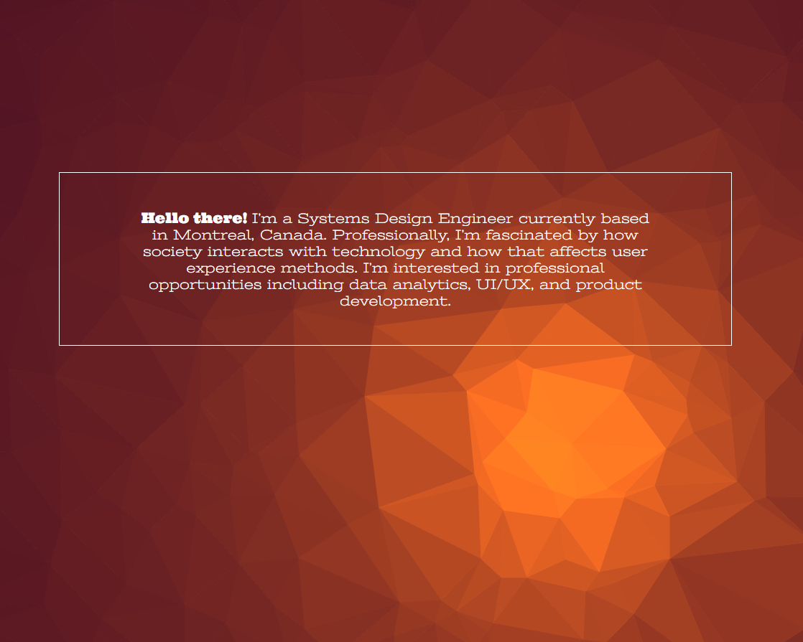

Since graduating and starting my first fulltime position I knew that I want to try to apply my development skills to building this personal webpage. The real question was where to start from? I knew that I want to have a parralax feel but not based direct off a template. If I were to do it again I would've choose a more mobile friendly CSS framework
I wanted a large feature right from the start of the page followed by brief, focused content. The colour scheme was inspired by the initial background I made using an online geometric tool. The coordination of the burgundy, orange, deep grey, and white was very intentional compared to the more traditional colours of blue or green.
Github repoRecently added a portfolio section for website. Went with a simpler theme overall, sticking to black and white for stark constrast and emphasis on the photo cotent. For the font, choose two Google fonts: bold uppercase heading with Oswald and body text in Muli.